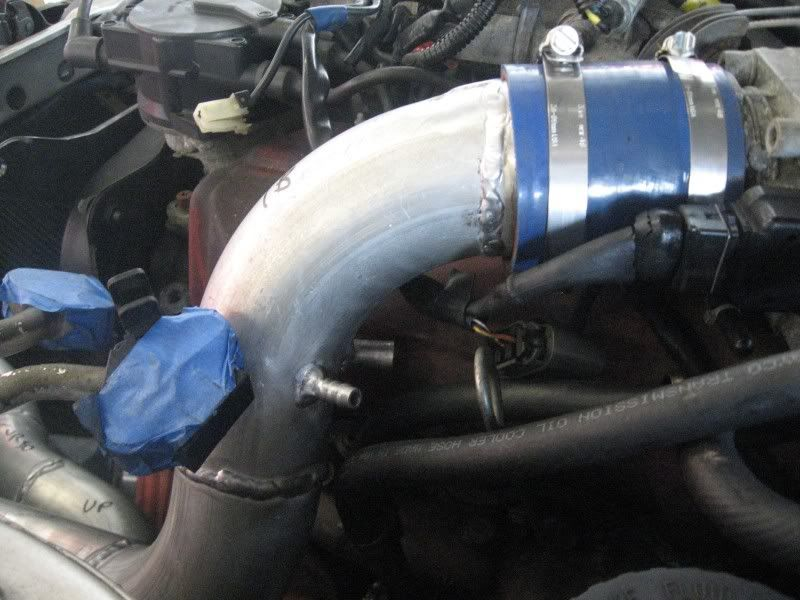
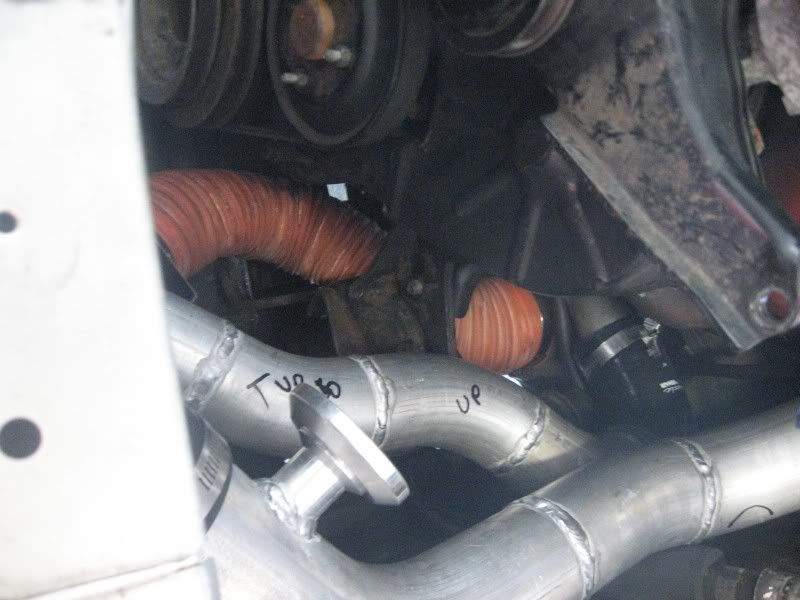
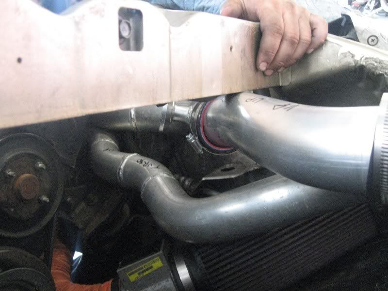
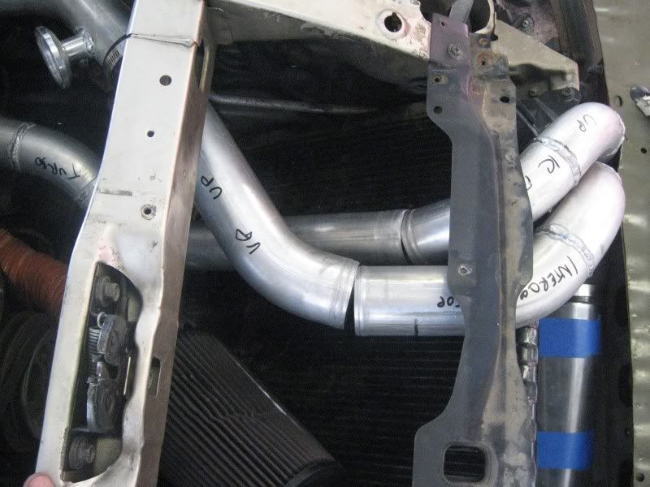
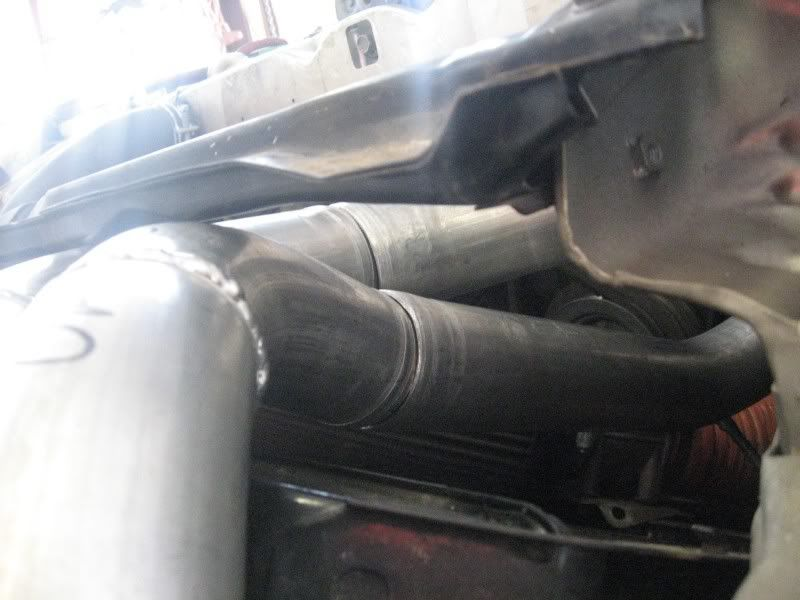
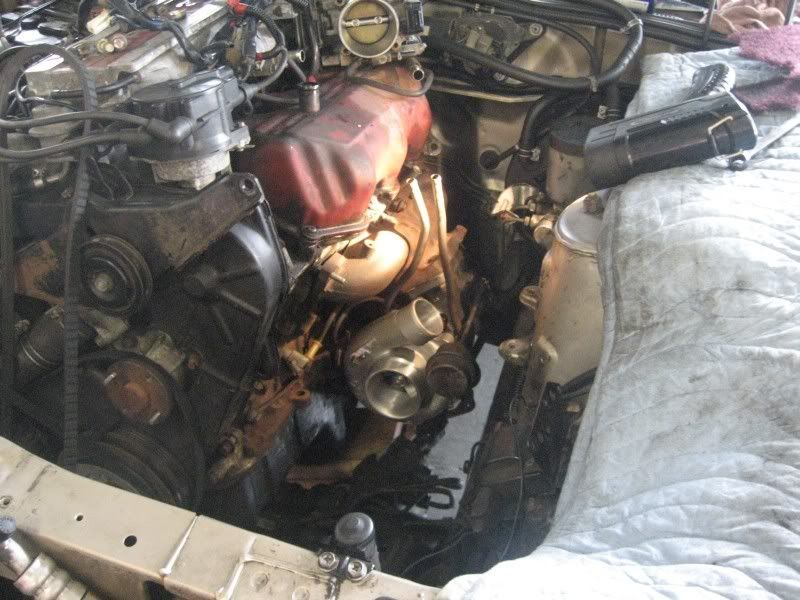

-
For your reference, look here to see what the assembled kit looks like.
CM says that you need an efan for it to fit as the stock clutch fan gets in the way. And so I obtained a Maxima e-fan to do the job.
Starting off, here's the throttle body pipe. As you can see they welded two nipples, at my request, for the idle control valve. The nipples are missized and poorly placed. The idle control nipple is very close to the valve cover. Any hose attached here will probably be pinched against the valve cover.

Here's what the piping looks like overall in my 87 NA2T. As you can see, the E-fan is not fitted. This is because the piping will not fit with the Maxima e-fan. Maybe with the Taurus e-fan it will fit. Who knows. The piping goes over the radiator and behind the bumper. This kit is intended to be used with a wedge-type intercooler, and so I bought a Treadstone TRV-185 which is a spearco 221 clone. In order to fit this IC within the passenger side frame rail, we had to move the pipes as far to the right (as you're seeing it here) as possible. In order to do this, as the radiator endtank buldges at this point, we had to cut into the bumper a little to fit the pipe. While this allowed the IC to fit, the crossbar above the pipes no longer fit.
My intake attached to a snaked flexible hose. The intake pipe provided with the kit will not clear the stock motor mount. Only, perhaps, with poly motor mounts will the intake pipe clear. And then you would still need to mount the MAF and filter. I have a 9" K&N filter. This filter would have been too big to fit. The placement of the filter, right on the radiator, is less than ideal.

A very poor fitting coupler on the top piping, due to the awkward bending of the piping. We tried every possible orientation with that pipe, and this is the best we could do. Another view of my ghetto-fabulous intake snake.

After a couple of attempts at fitting where we could not re-mount the crossbar, we took the pipes out, bolted down the crossbar, and tried again. Again after messing with the pipes as much as we could, this the closest we could get. Would you expect a coupler on the larger pipe to hold 20PSI like that? Not only that, but a 1/3 of the radiator will not get an airflow from a e-fan because it won't fit under the pipes.

More awkward bending

So overall, the kit proved to be a huge disappointment. I will be sending it back and asking CM for a refund. I'll have to explore other options for IC piping that will keep the AC.
On the bright side, my turbo from cherryturbos.com bolted back in just fine. We managed to smush the stock turbo-TB pipe back on so that my car will be drivable in the meantime.
 -
DAMN!!!!!!! -
just go v-mount like mine…it can be used with AC…i can have the guy that made mine make you one…
1988 570zx SS Edition
Originally posted by Neil86t -
This is exactly why I don't do custom IC kits or exhausts. That is not something anyone should do unless they have the car in front of them to work off of.85 Z31 6.0 LSX turbo 766whp/792wtq
04 GTO, LS6, big cam, porting, N20… underway for summertime daily driver. -
I was one of the first to have one of the CM kits about 4 years ago. It sucked worse than yours, welds were for shit. Sad to see that is the final result after years of being able to try to get it right. Sorry to hear that....
How did the adapter harness work out?
-
Sorry for the bad luck. I hope you get your money back.Elitist Prick Black Z owner.
1986 300zx Turbo
2011 Ford F150 Super Crew 4x2 EcoBOOST
1985 Toyota 4Runner, locked, lifted, geared, uglied.

-
bummer, make sure to send them those pictures. They are trying to get things right, and do it at a price z31 people are willing to pay (not much). I'm willing to bet you paid only a fraction of the cost of a 'kit' that is supplied for many cars with sales numbers factors of 10 higher than the poor z31. -
The pipes cost $700.
I understand CM's trying to do something good with the kit and that the design of the car itself is a big part of the problem. I just hate that I'm the one that again has to get an item from CM that's messed up. When I ordered my 3" exhaust from them, the downpipe flange was placed totally wrong, and I had to wait for a replacement. Then the cat-back system had a bad bend, so I had to go to an exhaust shop to have it cut up and re-welded to fit. I don't have a garage, I can't fab stuff up, I have to drive 55 miles in NYC traffic over to Chris86NA2T's place if I want anything done to my car. I need bolt-in items, and I'm willing to pay extra for the convenience of bolt-in items that fit. Enough rambling, we'll see about that refund. -
that is a bummer Al. I hope you get your money back.
Your Z is not the DD is it?Originally posted by michaelp -
Just a slight correction, the pipes themselves are $450, my kit cost me $700 because I included a HKS BOV and flange with my kit.
Chris and I did put the Maxima e-fan on, and the Painless thermostat switch works great with it. The car is still perfectly drivable, but I'm gonna lay off the boost for awhile. -
Now I'm glad I never got the one I ordered 3-4 years ago. I called Dave once a month for 6 months and never got the IC kit and the exhaust I did get (ordered both at same time) had to be cut and rewelded to fit too. Dave never charged me for the IC kit so I just let it go. -
i bet if you let them work on the car for a little, the kit would be flawless, as would every other one they built. they need to work out bugs just like everyone else, and they would probably still do the refund
if i remember correctly they had no donor car to work off ofSS
Support RRR Z Parts!!!!

-
They had TBO's car for a while to work off of, which was using Maxima fans. He went through a ton of hassle with them to get it right but it fits, and uses the maxima fans.sreich05 wrote:
if i remember correctly they had no donor car to work off of
In the years they have been offering this kit I have yet to read one success story about it. It truly puzzles me why people still buy it and complain about how it fits.1985 NA2T(now RB) * 1988 SS x2 * 1984 AE x3 * 2006 350Z

-
Were any pictures posted somewhere? I'm curious to see how he got it to fit with maxima fans, because there was no way mine was going to fit. It must have been with a stock turbo and a smaller intercooler. With my intercooler the pipes would have gone right over the shroud of the driver's side fan, and therefore impossible to fit under the crossbar. I tried.OK85ZX wrote:
They had TBO's car for a while to work off of, which was using Maxima fans. He went through a ton of hassle with them to get it right but it fits, and uses the maxima fans.
When I bought the kit, CM told me they had sold about a half-dozen of the newly available kits and haven't heard of any problems, I wish I could see some pictures of those setups. If it puzzles you why someone would complain after spending hundreds of dollars on something that doesn't fit after seeing pictures of one that fit, and being told that it fit, I don't know what else to tell you. -
Dave also used Ish's car as a template.

Copyright © 2006–. All rights reserved. Privacy Policy